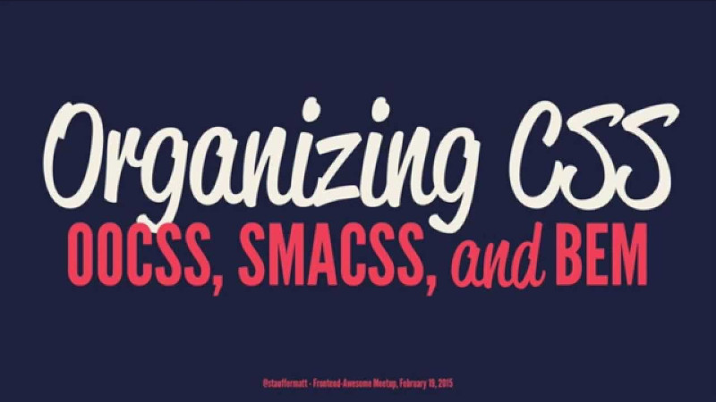

Organizing CSS
2019-01-01
 This image is from Matt Stauffer's YouTube video, linked below. Check it out it's awesome
When I was working in a large corporate environment we use SASS to support and maintain the enormous CSS code base for our web application.
I've been in similar corporate roles that didn't have any formal organizational methodology or style guide in place on how to manage the CSS code. The code was an unwieldy mess of either one big file or too many poorly named and organized files. Refactoring the code base was a nightmare.
During that time I stumbled on to a number of different websites and articles that explain CSS organizational methodologies which, when implemented correctly, would reduce complexity of the CSS code base. Making it more flexible and maintainable in the long run.
Personally I prefer using SASS with BEM and/or SMACSS. Of course the tools used depend on the over all specifications of the project.
Resources: